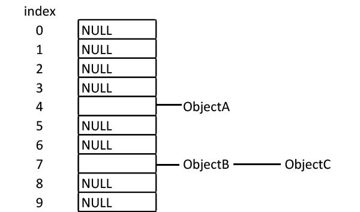

CSS Performance & What is the Browser doing?
by Sarah Etter / @SarahEtter_
Sarah Etter
sarahetter.com
@SarahEtter_
sarah@sarahetter.com
Object Models
DOM
CSSOM
Tree Structure

Object Models
DOM
CSSOM
Render Tree
Render Tree - Digging Deeper
- Style Sharing
- CSS Rule Hash Tables
- Ancestor Filters
CSS Rule Hash Tables
Ancestor Filters
 By David Eppstein - self-made, originally for a talk at WADS 2007, Public Domain, https://commons.wikimedia.org/w/index.php?curid=2609777
By David Eppstein - self-made, originally for a talk at WADS 2007, Public Domain, https://commons.wikimedia.org/w/index.php?curid=2609777
Rendering
Layout
Paint
Composite
Layout (aka Reflow)
- Creates the layout of the site
- Takes all positioning and sizing rules and creates a box-only layout of the site.
- Calculates number of lines for text and uses line height
- Recursive process
Layout Visualization
Paint
- Browser creates layers and adds the colours to pixels on these layers.
- Not actually on the page yet.
- Browser sends layer to the CPU or in some cases GPU
- Processor creates the texture (bitmap final image) to be displayed on the page
Composite
- Taking the painted layers and placing them on the previously calculated layout.
Layout Invalidations
- Manipulating DOM tree
- Hiding things (adding display: none)
- Resizing window
- Changing the font
- Adding or removing a stylesheet
- Content changes
- Manipulating the class attribute
- Getting offsetWidth and offsetHeight
- And more...
So what does this all mean?
.link {
color: blue;
}
.tagLi .tagB a.TagA.link {
color: blue;
}
div.wrapper > div.tagDiv > div.tagDiv.layer2 >
ul.tagUL > li.tagLi > b.tagB > a.TagA.link {
color: blue;
}
Why optimize?
https://wpostats.com/So what can I do?
- Two categories:
- Load-time Optimization
- After Load Optimization
Load-time Optimization
- CDN
- Stylesheet Size
- Critical CSS
Stylesheet Size
- UnCSS - npm package that uses PhantomJS
- Less specific, more modular code (Easier to maintain, too!)
- In general: Write as little CSS as possible
- DRY
Critical CSS
- Inline above the fold CSS
- critical npm package - finds critical CSS for you
- Warning: inline won’t leverage browser caching
After Load Optimization
Considerations:
- Scrolling
- Animations
- Interactions
- http://csstriggers.com/
Scrolling
- Browser needs to be painting during scroll
Animations
- CSS animations/transitions preferred!
- Don't use setTimeout
- requestAnimationFrame(function())
- transform: translate(); instead of top/right/bottom/left
Interaction
- Beware of layout invalidations
Expensive Styles
- Some styles take a slightly longer time to render initially
- box-shadow
- border-radius
- transparency (opacity and rgba/hsla)
- transform
- CSS filters
Chrome Devtools Monitoring
- Rendering Tab
- Timeline
Rendering Tab
- Enable Paint Flashing
- Show FPS meter
- Show scrolling perf issues
- Show layer borders
Timeline
- Record Timeline
- Watch for long frames
- Diagnose the issue